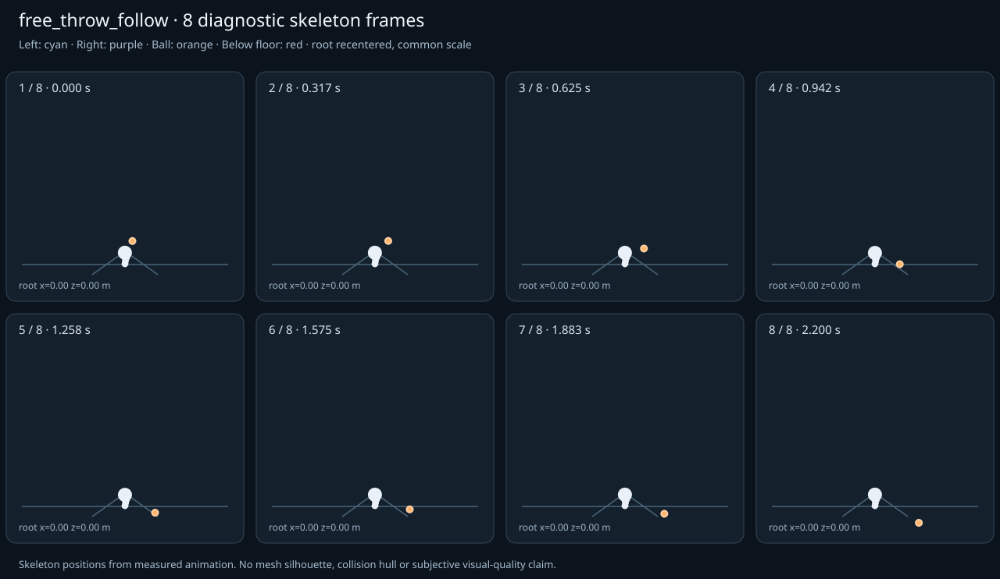

כל הקליפים · תצוגת התנועה · JSON מקורי
ציון 91.9 · כיסוי 100%
נתוני motion-qa-v1 המקוריים; עיצוב הדוח בלבד הותאם לחבילה. נקודות הסוליה נמדדות בתרחיש שחקן חיצוני מוצהר; Root בנכס נשאר קבוע.

| מדד | מצב | ערך | ציון | ראיות |
|---|---|---|---|---|
| החלקת רגליים | ירוק | 0 | 100 | ראיות המדידה{
"coordinateSpace": "native GLB plus explicitly declared external actor position and heading, applied once",
"supportSource": "declared",
"windows": 2,
"samples": 530,
"maxDriftMeters": 0,
"p95SpeedMetersPerSecond": 0.000022,
"worst": {
"bone": "LeftFoot",
"t": 0.683333,
"start": 0,
"end": 2.2,
"driftMeters": 0
}
} |
| חדירה לרצפה | ירוק | 0.000007 | 99.97 | ראיות המדידה{
"samples": 5300,
"floorY": 0,
"probeKind": "declared sole probes plus skeletal joint centers (no mesh surfaces)",
"maxDepthMeters": 0.000011,
"worst": {
"t": 0.683333,
"bone": "LeftFoot",
"depthMeters": 0.000011,
"y": -0.000011
}
} |
| קפיצות פוזה | ירוק | 0.316519 | 93.67 | ראיות המדידה{
"adjacentPairs": 264,
"observations": 4488,
"maxDegrees60Hz": 3.120689,
"maxMarkerStepHeight60Hz": 0.012661,
"maxRootStepHeight60Hz": 0,
"worst": {
"ratio": 0.3165189637270346,
"t": 1.108333,
"previousTime": 1.1,
"bone": "RightHand",
"markerStepHeight60Hz": 0.012661,
"degrees60Hz": 3.072788
}
} |
| חריגות אנטומיות | ירוק | 0 | 100 | ראיות המדידה{
"testedFrames": 265,
"affectedFrames": 0,
"checks": 4505,
"maxLimbFlexionDegrees": 41.291282,
"maxRelativeSegmentLengthChange": 0,
"hingeDirectionChecked": true,
"axialTwistChecked": false,
"violations": []
} |
| מגע בכדור | לא חל | — | — | ראיות המדידה{} |
| כניסה ויציאה מול המתנה | אדום | 3.274432 | 47.71 | ראיות המדידה{
"entry": {
"ratio": 3.2744317665016696,
"t": 0,
"idleTime": 1.866667,
"markers": 17,
"rmsPositionHeight": 0.130977,
"rmsRotationDegrees": 51.509355,
"rmsVelocityHeightPerSecond": 0.003033,
"velocityEvaluated": true
},
"exit": {
"ratio": 0.00403499879181497,
"t": 2.2,
"idleTime": 3.966667,
"markers": 17,
"rmsPositionHeight": 0.000101,
"rmsRotationDegrees": 0.019375,
"rmsVelocityHeightPerSecond": 0.003026,
"velocityEvaluated": true
},
"worstEndpoint": "entry",
"alignment": "horizontal root translation; raw asset poses used when provided"
} |
| מהירות גוף מול צעדים | לא חל | — | — | ראיות המדידה{} |
| סימטריה | ירוק | 0 | 100 | ראיות המדידה{
"mode": "structural",
"modeSource": "declared",
"structuralMismatch": 0,
"segments": [
{
"segment": "Arm-ForeArm",
"mismatch": 0
},
{
"segment": "ForeArm-Hand",
"mismatch": 0
},
{
"segment": "UpLeg-Leg",
"mismatch": 0
},
{
"segment": "Leg-Foot",
"mismatch": 0
}
],
"motionRmsHeight": null,
"worstMotion": null,
"bilateralPoseRmsHeightUnscored": 0.154799,
"note": "One-sided authored actions are checked for structural symmetry only."
} |